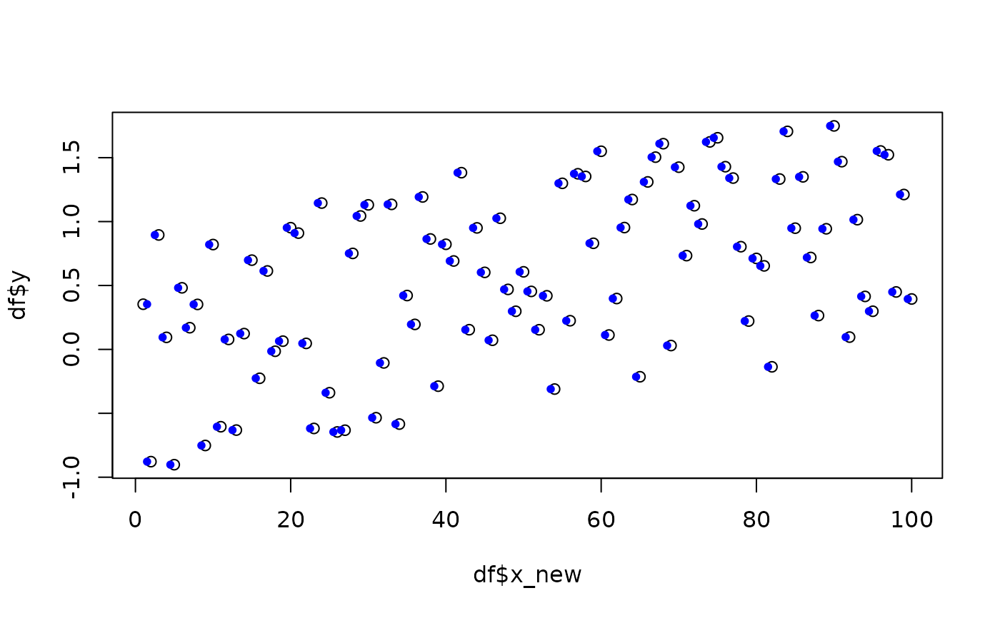
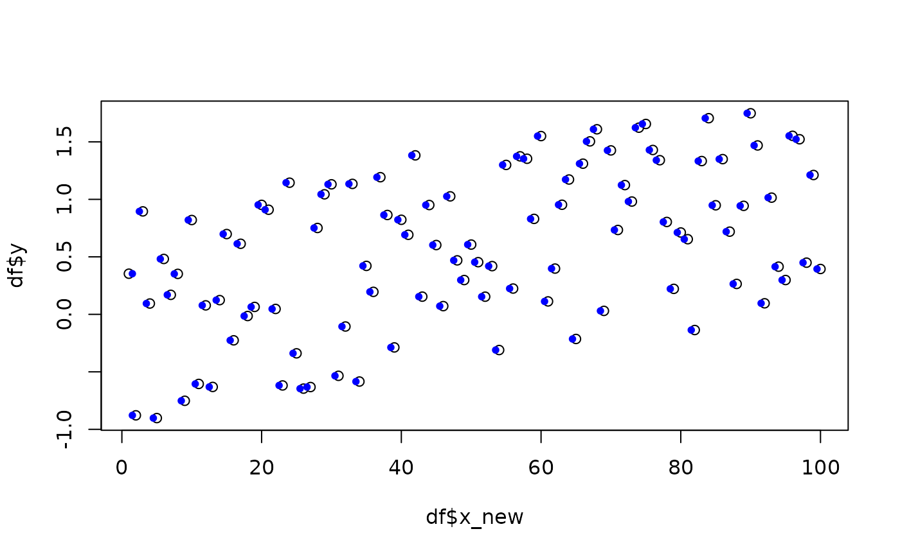

These functions are used internally by diachrony_ and synchrony_ functions,
but they may be of interest for custom constructions. See Details.
Usage
predictor_loess(df, x_prediction, ...)
predictor_gam(df, x_prediction, ...)
predictor_lm(df, x_prediction, ...)
predictor_bins_breaks(df, x_prediction, ...)
predictor_bins_midpoint(df, x_prediction, ...)Arguments
- df
tibble(), typically after shake. Must have a .x and and .y columns.- x_prediction
numeric vector on x values on which to predict
- ...
additional parameters for each predictors (see Details)
Details
In df, x_new and y columns must be present. This ease and fasten permutations
because the raw data is prepared once for all.
Most of these functions are thin wrappers around built-in predictors such as
stats::loess(), stats::lm(), mgcv::gam(), etc.
These predictors follow these steps:
fit the
y(value of interest) using the (typically shaked)x. We thus obtain a continuous model that we use to:predict new
yvalues on a range ofx. Thesexvalues are typically fixed, so that we can later obtain confidence intervals, etc. for each of these points.
They thus aim at summarising new y values at fixed x values, using
predict_bin makes no intermediate
adjustment and summarises raw value either using mean or median (see Examples)
Functions
predictor_loess: predict usingstats::loess()predictor_gam: predict using mgcv::gampredictor_lm: predict usingstats::lm()predictor_bins_breaks: no fit, justcut()and returns slices as factorpredictor_bins_midpoint: no fit, justcut()and returns slices as numeric
Examples
# replicability
set.seed(2329)
x_pred <- 1:100
df <- data.frame(x_new=x_pred, y=runif(100, -1, 1) + x_pred/100)
x_pred <- 1:100
p_loess <- predictor_loess(df, x_pred) # default span, ie 0.75
p_loess2 <- predictor_loess(df, x_pred, span=0.2) # custom span
# or using gam instead
p_gam <- predictor_gam(df, x_pred)
# or lm
p_lm <- predictor_lm(df, x_pred)
plot(df$x_new, df$y)
lines(p_loess$x_new, p_loess$y, col="firebrick3")
lines(p_loess2$x_new, p_loess2$y, col="orange")
lines(p_gam$x_new, p_gam$y, col="blue")
lines(p_lm$x_new, p_lm$y, col="forestgreen")
 ### bins
# when using bins the output depends of the function
p_breaks <- predictor_bins_breaks(df, x_pred)
# this returns factors
p_breaks
#> x_new y
#> 1 [1,2] 0.35341687
#> 2 [1,2] -0.87818619
#> 3 (2,3] 0.89519883
#> 4 (3,4] 0.09414381
#> 5 (4,5] -0.90204424
#> 6 (5,6] 0.48169961
#> 7 (6,7] 0.16957463
#> 8 (7,8] 0.35190793
#> 9 (8,9] -0.75168929
#> 10 (9,10] 0.82023581
#> 11 (10,11] -0.60505632
#> 12 (11,12] 0.07806676
#> 13 (12,13] -0.63127791
#> 14 (13,14] 0.12362357
#> 15 (14,15] 0.69824234
#> 16 (15,16] -0.22600968
#> 17 (16,17] 0.61369767
#> 18 (17,18] -0.01451321
#> 19 (18,19] 0.06450122
#> 20 (19,20] 0.95209575
#> 21 (20,21] 0.90973407
#> 22 (21,22] 0.04698405
#> 23 (22,23] -0.61838939
#> 24 (23,24] 1.14478945
#> 25 (24,25] -0.33906626
#> 26 (25,26] -0.64589837
#> 27 (26,27] -0.63221046
#> 28 (27,28] 0.75104089
#> 29 (28,29] 1.04381285
#> 30 (29,30] 1.13068856
#> 31 (30,31] -0.53458649
#> 32 (31,32] -0.10577192
#> 33 (32,33] 1.13443241
#> 34 (33,34] -0.58439354
#> 35 (34,35] 0.42142479
#> 36 (35,36] 0.19553367
#> 37 (36,37] 1.19256740
#> 38 (37,38] 0.86403503
#> 39 (38,39] -0.28772797
#> 40 (39,40] 0.82227857
#> 41 (40,41] 0.69172729
#> 42 (41,42] 1.38252133
#> 43 (42,43] 0.15397780
#> 44 (43,44] 0.95055373
#> 45 (44,45] 0.60263713
#> 46 (45,46] 0.07154191
#> 47 (46,47] 1.02600869
#> 48 (47,48] 0.46936287
#> 49 (48,49] 0.29828659
#> 50 (49,50] 0.60678142
#> 51 (50,51] 0.45368359
#> 52 (51,52] 0.15363081
#> 53 (52,53] 0.41929507
#> 54 (53,54] -0.31035475
#> 55 (54,55] 1.29930989
#> 56 (55,56] 0.22424582
#> 57 (56,57] 1.37397923
#> 58 (57,58] 1.35309634
#> 59 (58,59] 0.83016556
#> 60 (59,60] 1.55016116
#> 61 (60,61] 0.11249589
#> 62 (61,62] 0.39795404
#> 63 (62,63] 0.95313154
#> 64 (63,64] 1.17256178
#> 65 (64,65] -0.21413562
#> 66 (65,66] 1.31028964
#> 67 (66,67] 1.50405711
#> 68 (67,68] 1.60932010
#> 69 (68,69] 0.03011264
#> 70 (69,70] 1.42552953
#> 71 (70,71] 0.73364417
#> 72 (71,72] 1.12406057
#> 73 (72,73] 0.98104225
#> 74 (73,74] 1.62332878
#> 75 (74,75] 1.65553579
#> 76 (75,76] 1.42929016
#> 77 (76,77] 1.34033677
#> 78 (77,78] 0.80341918
#> 79 (78,79] 0.22164150
#> 80 (79,80] 0.71178300
#> 81 (80,81] 0.65342478
#> 82 (81,82] -0.13640990
#> 83 (82,83] 1.33299006
#> 84 (83,84] 1.70563719
#> 85 (84,85] 0.94836022
#> 86 (85,86] 1.34979459
#> 87 (86,87] 0.71911164
#> 88 (87,88] 0.26455080
#> 89 (88,89] 0.94354067
#> 90 (89,90] 1.74850498
#> 91 (90,91] 1.46870781
#> 92 (91,92] 0.09610908
#> 93 (92,93] 1.01493933
#> 94 (93,94] 0.41452147
#> 95 (94,95] 0.29843927
#> 96 (95,96] 1.55234023
#> 97 (96,97] 1.52267705
#> 98 (97,98] 0.44941425
#> 99 (98,99] 1.21174733
#> 100 (99,100] 0.39443985
# and their natural graphical output is a boxplot
p_breaks %>% boxplot(y~x_new, data=.)
# but this one returns midpoint as a numeric
p_midpoint <- predictor_bins_midpoint(df, x_pred)
# and the binning is quite clear here
plot(df$x_new, df$y)
points(p_midpoint$x_new, p_midpoint$y, col="blue", pch=20)

### bins
# when using bins the output depends of the function
p_breaks <- predictor_bins_breaks(df, x_pred)
# this returns factors
p_breaks
#> x_new y
#> 1 [1,2] 0.35341687
#> 2 [1,2] -0.87818619
#> 3 (2,3] 0.89519883
#> 4 (3,4] 0.09414381
#> 5 (4,5] -0.90204424
#> 6 (5,6] 0.48169961
#> 7 (6,7] 0.16957463
#> 8 (7,8] 0.35190793
#> 9 (8,9] -0.75168929
#> 10 (9,10] 0.82023581
#> 11 (10,11] -0.60505632
#> 12 (11,12] 0.07806676
#> 13 (12,13] -0.63127791
#> 14 (13,14] 0.12362357
#> 15 (14,15] 0.69824234
#> 16 (15,16] -0.22600968
#> 17 (16,17] 0.61369767
#> 18 (17,18] -0.01451321
#> 19 (18,19] 0.06450122
#> 20 (19,20] 0.95209575
#> 21 (20,21] 0.90973407
#> 22 (21,22] 0.04698405
#> 23 (22,23] -0.61838939
#> 24 (23,24] 1.14478945
#> 25 (24,25] -0.33906626
#> 26 (25,26] -0.64589837
#> 27 (26,27] -0.63221046
#> 28 (27,28] 0.75104089
#> 29 (28,29] 1.04381285
#> 30 (29,30] 1.13068856
#> 31 (30,31] -0.53458649
#> 32 (31,32] -0.10577192
#> 33 (32,33] 1.13443241
#> 34 (33,34] -0.58439354
#> 35 (34,35] 0.42142479
#> 36 (35,36] 0.19553367
#> 37 (36,37] 1.19256740
#> 38 (37,38] 0.86403503
#> 39 (38,39] -0.28772797
#> 40 (39,40] 0.82227857
#> 41 (40,41] 0.69172729
#> 42 (41,42] 1.38252133
#> 43 (42,43] 0.15397780
#> 44 (43,44] 0.95055373
#> 45 (44,45] 0.60263713
#> 46 (45,46] 0.07154191
#> 47 (46,47] 1.02600869
#> 48 (47,48] 0.46936287
#> 49 (48,49] 0.29828659
#> 50 (49,50] 0.60678142
#> 51 (50,51] 0.45368359
#> 52 (51,52] 0.15363081
#> 53 (52,53] 0.41929507
#> 54 (53,54] -0.31035475
#> 55 (54,55] 1.29930989
#> 56 (55,56] 0.22424582
#> 57 (56,57] 1.37397923
#> 58 (57,58] 1.35309634
#> 59 (58,59] 0.83016556
#> 60 (59,60] 1.55016116
#> 61 (60,61] 0.11249589
#> 62 (61,62] 0.39795404
#> 63 (62,63] 0.95313154
#> 64 (63,64] 1.17256178
#> 65 (64,65] -0.21413562
#> 66 (65,66] 1.31028964
#> 67 (66,67] 1.50405711
#> 68 (67,68] 1.60932010
#> 69 (68,69] 0.03011264
#> 70 (69,70] 1.42552953
#> 71 (70,71] 0.73364417
#> 72 (71,72] 1.12406057
#> 73 (72,73] 0.98104225
#> 74 (73,74] 1.62332878
#> 75 (74,75] 1.65553579
#> 76 (75,76] 1.42929016
#> 77 (76,77] 1.34033677
#> 78 (77,78] 0.80341918
#> 79 (78,79] 0.22164150
#> 80 (79,80] 0.71178300
#> 81 (80,81] 0.65342478
#> 82 (81,82] -0.13640990
#> 83 (82,83] 1.33299006
#> 84 (83,84] 1.70563719
#> 85 (84,85] 0.94836022
#> 86 (85,86] 1.34979459
#> 87 (86,87] 0.71911164
#> 88 (87,88] 0.26455080
#> 89 (88,89] 0.94354067
#> 90 (89,90] 1.74850498
#> 91 (90,91] 1.46870781
#> 92 (91,92] 0.09610908
#> 93 (92,93] 1.01493933
#> 94 (93,94] 0.41452147
#> 95 (94,95] 0.29843927
#> 96 (95,96] 1.55234023
#> 97 (96,97] 1.52267705
#> 98 (97,98] 0.44941425
#> 99 (98,99] 1.21174733
#> 100 (99,100] 0.39443985
# and their natural graphical output is a boxplot
p_breaks %>% boxplot(y~x_new, data=.)
# but this one returns midpoint as a numeric
p_midpoint <- predictor_bins_midpoint(df, x_pred)
# and the binning is quite clear here
plot(df$x_new, df$y)
points(p_midpoint$x_new, p_midpoint$y, col="blue", pch=20)
